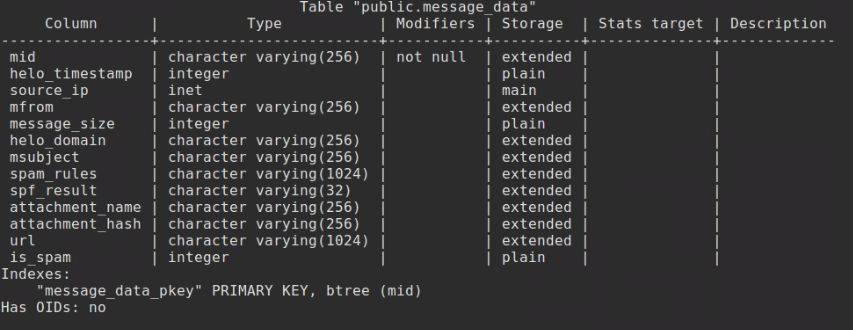
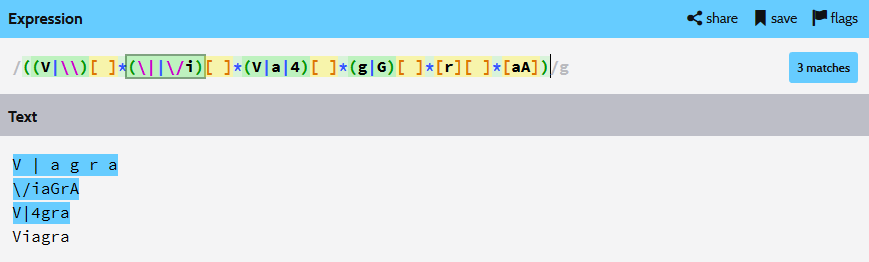
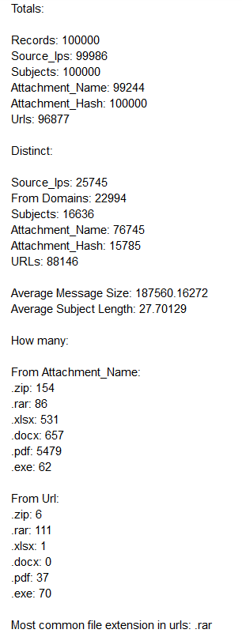

Week 8: Messaging - Security Tools and Techniques
Name: Kevin Guan
The main subject for week eight is messaging and its affiliated security tools. In the beginning, we were introduced to the most common terminologies that are often encountered in the field of messaging. The most prevalent term that many people are familiar with is spam, which consists of irrelevant or inappropriate messages that are sent to people en masse. Another term is spamtrap or honeypot, which are domains or addresses that are designed to only receive spam messages in order to categorize the legitimate spam messages from the harmless ones. Generally, any message that enters a spamtrap or honeypot are labeled as spam for most cases.
In addition, we also explored some of the different techniques that experienced spammers have utilized in the past. One instance that was examined was snowshoe spamming. The main purpose of snowshoe spamming is to spread the rate of spam distribution over the course of several minutes or hours through several different IP addresses, rather than one large bursts from a single IP addresses. This maneuvering allows the spam distributor to better avoid detection from many spam filters and maintain greater prevalence over the course of its lifespan. The technique is still applied today and continues creating many inconveniences for spam detectors. Likewise, spear phishing is another technique that is commonly employed by exploiters. The basis of spear phishing involves spoofing or replying to another user’s conversation or messages via injection and continuing the interaction. While the concept of spear phishing is rather simple in complexity, its simplicity allows exploiters to abuse it on a greater scale and still reap significant benefits from minimal efforts.
For tools, we explored PostgreSQL and Regex Coach as exercises. In the PostgreSQL exercise, the main goal was to familiarize ourselves with the environment and interface for the later lab. The message_data database consisted of exactly one hundred thousand entries of data. Some of the key data consists of source_up, message_size, domain, subject, spam_rules, attachment information, url, and spam detector features. The full list is shown below.

The second exercise consisted of using the Regex Coach to create a regular expression that will filter specific keywords or string patterns. For this case, the goal was to detect the strings "V | a g r a", "\/iaGra", and "V|4gra," but not filter "Viagra". The main goal for this exercise is to familiarize ourselves with looking for patterns and use that knowledge to filter out the targets, but leave similar terms untouched. The regular expression for this exercise followed that concept where the key goal was to find the key differences between the "Viagra" string and the other similar strings that need filtering. The first noticeable difference was the usage of the character "i" where two of the three targeted strings do not use that character at all. For the last case, I used a rule where the usage of a specific character ("/" for this case) must be present before the "i" character can be allowed. The rest of the process was simple matching with the rest of the targeted strings. In the end, all three targeted strings were detected by the regular expression, while excluding the "Viagra" string.

Eventually, we implemented the skills that were practiced in the earlier exercises in the data exploration lab. The first part of the lab involved digging through the data_message database with several PostgreSQL queries in order to gather the specific numbers of certain fields. The results are shown below.

From the results, the first noticeable relation is the total number of source IP addresses versus the number of distinct source IP addresses. Out of the 99,986 entries in the source_Ips field, only 25.7 percent of them were sent from a unique IP address. This happening suggests that a large proportion of the spam activity that occurs on the web is most likely caused by only a small population of deviants. Further, there were only 22,994 distinct from domains in the directory of 100,000 entries and accounts for only approximately 23% of all entries in the whole database. Another noticeable aspect that loudly proclaims the presence of the spam is the skewed ratio of total subject names versus the number of unique subject names. Out of the 100,000 subject names, only 16,636 of the names were unique, making 83.3 percent of all the entries consist of the same pool of subject names.
For the file extensions, the most prevalent case that was found in the URL field was .rar. For the attachment_name field, the most prevalent file extension was .pdf. The number of detected file extension in the URL field was shockingly low. A possible explanation for these low numbers is a potential fault in the query that collected this information. However, based on the number of total URLs versus the number of unique URLs, the small difference between total and distinct URLs suggests that spammers are more capable in manipulating URLs and prone to avoiding file extensions that place people at unease. For social engineering, .rar would be a good extension to place in the URL to be visible as it is an extension that many people are familiar with and have little worries about, so they are more likely to drop their guard when seeing it. On the other hand, in the attachment_name field, there are numerous dangerous file extensions listed with .pdf listed as number one. This case can be dangerous since .pdf files have been used to exploit many people in the past. While exploiters are deceiving people with the URL, they are distributing many dangerous files that can be abused and are potentially very harmful.
Furthermore, the overall database consisted of approximately seventy percent spam. One of the classification strategy was to take advantage of the limited number of subjects and trace the source IP addresses of the corresponding subjects. If one subject is considered spam, then the source IP address would be flagged and the rest of the subjects would be categorized as spam as well. Another method was the tracing of specific attachment hashes that have affiliations to spam and flagging them in the process. Another similar process involves the tracing of the from address instead of the attachment hash. If the from address pertains any suspicions to any affiliation to spam, then the address would be flagged.